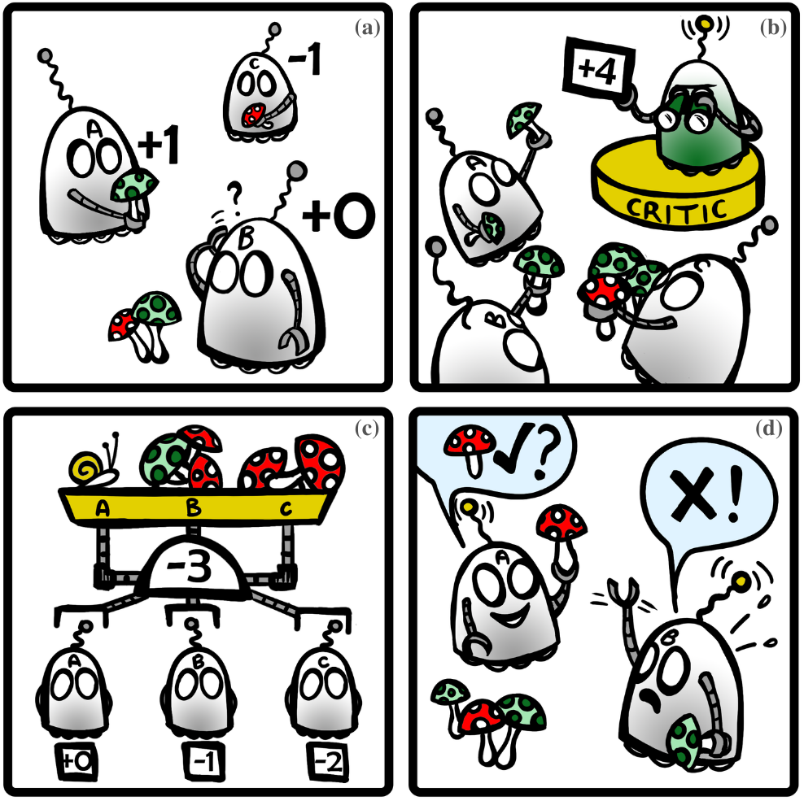

Yutong Wang
|
|
My name is Yutong Wang (王语童). I am a third year Ph.D. student in the Department of Mechanical Engineering at the National University of Singapore, advised by Professor Guillaume Sartoretti. Currently, I am a visiting student in the Robotics Institute at Carnegie Mellon University, advised by Professor Jiaoyang Li. Previously, I received my Master's degree in Mechanical Engineering from the National University of Singapore and a B.Eng. in Electrical Engineering and Automation from Shanghai University .
My research interests encompass Multi-Agent Reinforcement Learning (MARL), Multi-Agent Path Finding (MAPF), and communication learning within the MARL framework. Currently, I am focusing on integrating search-based MAPF algorithms with MARL to address large-scale, complex MAPF problems and their variations. My goal is to devise fundamental algorithms that balance computational efficiency with solution quality, and to deploy them on physical robots. Such problems are commonly encountered in fields such as warehouse logistics, manufacturing, and search-and-rescue operations.
| CV |
Email |
Google Scholar |
Github |
|
|
|
SCRIMP: Scalable Communication for Reinforcement- and Imitation-Learning-Based Multi-Agent Pathfinding
Yutong Wang, Bairan Xiang, Shinan Huang, Guillaume Sartoretti
International Conference on Intelligent Robots and Systems 2023 (IROS 2023), Accepted.
abstract |
pdf |
code |
Trading off performance guarantees in favor of scalability, the Multi-Agent Path Finding (MAPF) community has recently started to embrace Multi-Agent Reinforcement Learning (MARL), where agents learn to collaboratively generate individual, collision-free (but often suboptimal) paths. Scalability is usually achieved by assuming a local field of view (FOV) around the agents, helping scale to arbitrary world sizes. However, this assumption significantly limits the amount of information available to the agents, making it difficult for them to enact the type of joint maneuvers needed in denser MAPF tasks. In this paper, we propose SCRIMP, where agents learn individual policies from even very small (down to 3x3) FOVs, by relying on a highly-scalable global/local communication mechanism based on a modified transformer. We further equip agents with a state-value-based tie-breaking strategy to further improve performance in symmetric situations, and introduce intrinsic rewards to encourage exploration while mitigating the long-term credit assignment problem. Empirical evaluations on a set of experiments indicate that SCRIMP can achieve higher performance with improved scalability compared to other state-of-the-art learning-based MAPF planners with larger FOVs, and even yields similar performance as a classical centralized planner in many cases. Ablation studies further validate the effectiveness of our proposed techniques. Finally, we show that our trained model can be directly implemented on real robots for online MAPF through high-fidelity simulations in gazebo.
|
|
|
FCMNet: Full Communication Memory Net for Team-Level Cooperation in Multi-Agent Systems
Yutong Wang, Guillaume Sartoretti
International Conference on Autonomous Agents and Multiagent Systems 2022 (AAMAS 2022), Accepted.
abstract |
pdf |
code |
Decentralized cooperation in partially-observable multi-agent systems requires effective communications among agents. To support this effort, this work focuses on the class of problems where global communications are available but may be unreliable, thus precluding differentiable communication learning methods. We introduce FCMNet, a reinforcement learning based approach that allows agents to simultaneously learn a) an effective multi-hop communications protocol and b) a common, decentralized policy that enables team-level decision-making. Specifically, our proposed method utilizes the hidden states of multiple directional recurrent neural networks as communication messages among agents. Using a simple multi-hop topology, we endow each agent with the ability to receive information sequentially encoded by every other agent at each time step, leading to improved global cooperation. We demonstrate FCMNet on a challenging set of StarCraft II micromanagement tasks with shared rewards, as well as a collaborative multi-agent pathfinding task with individual rewards. There, our comparison results show that FCMNet outperforms state-of-the-art communication-based reinforcement learning methods in all StarCraft II micromanagement tasks, and value decomposition methods in certain tasks. We further investigate the robustness of FCMNet under realistic communication disturbances, such as random message loss or binarized messages (i.e., non-differentiable communication channels), to showcase FMCNet's potential applicability to robotic tasks under a variety of real-world conditions.
|
|

|
Distributed Reinforcement Learning for Robot Teams: a Review
Yutong Wang, Mehul Damani, Pamela Wang, Yuhong Cao, Guillaume Sartoretti
Current Robotics Reports, Accepted.
abstract |
pdf |
This survey reports the challenges surrounding decentralized model-free MARL for multi-robot cooperation and existing classes of approaches. We present benchmarks and robotic applications along with a discussion on current open avenues for research.
|
|
{kind=link}